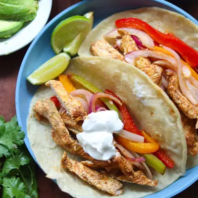

Sheet Pan Chicken Fajitas

Ingredients
- 1 pound chicken breast or thigh, sliced into 1/2 inch strips
- 3 bell peppers - red, yellow, and green, sliced into thin strips
- 1 red onion, sliced thinly
- 3 tablespoons olive oil
- 2 tablespoons chicken seasoning or fajita seasoning (see notes section)
- 8 flour tortillas
- Sour cream, guacamole, cheese, salsa, lime juice, cilantro
Steps
- Preheat oven to 400°F. Grease or line a large rimmed baking sheet with parchment paper for easy cleanup.
- Place the sliced chicken on one side of the sheet pan. Arranged the vegetables on the other side of the pan. Drizzle oil evenly over both the chicken and the vegetables. Sprinkle the seasoning blend also.
- Use your hands or a pair of tongs to toss everything together on the pan, making sure the ingredients are well coated. Arrange in a single layer to ensure even cooking. Make sure the chicken isn't overlapping too much, which helps it get a nice roast rather than steam.
- Place the sheet pan in the preheated oven. Roast for 20-25 minutes, stirring halfway through, until the chicken is fully cooked (internal temperature sure reads 165°F) and the vegetables are tender.
- Remove from the oven. Squeeze some lime juice and sprinkle with freshly chopped cilantro, if desired.
Recipe by Min Kwon · Kidfriendly Meals, from MJ and Hungryman. Saved here for personal use; the original has the full notes, tips and photos. Open original